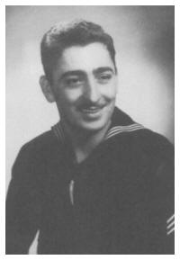

|
|
TAPS
Fading light dims the sight,
And a star gems the sky, gleaming bright.
From afar drawing nigh,
Falls the night.
Day is done, gone the sun,
From the lake, from the hills, from the sky.
All is well, safely rest,
God is nigh.
Then good night, peaceful night,
Till the light of the dawn shineth bright,
God is near, do not fear,
Friend, good night.
by B/Gen Daniel Butterfield, MOH |
|
|
|
|
|
Thomas Kirk 1951 -
2006
  Thomas
Wm. "Crazy Kirk" Kirk, 55, a retired
aircraft welder at Lockheed-Martin, died
Sunday, Oct. 22, 2006, in Benbrook. Thomas
Wm. "Crazy Kirk" Kirk, 55, a retired
aircraft welder at Lockheed-Martin, died
Sunday, Oct. 22, 2006, in Benbrook.
Funeral: 1 p.m.
Saturday in Crosier-Pearson Cleburne
Chapel. Visitation: 6 to 8 p.m. Friday.
Gooney Goo Hoo!
Celebrating the life of Thomas Wm.
"Crazy Kirk" Kirk.
Thomas Wm. Kirk was born Jan. 24, 1951,
in Jackson, Mich., to Orland and Marvel
Ensley Kirk. He married Karen Kuenz on
Jan. 8, 1972, in Jackson, Mich. He was a
Vietnam veteran, serving in the U.S.
Navy, and was a member of the VFW in
Burleson and Jackson, Mich.
He is gone but will never be forgotten.
Survivors: He is survived and loved by
his wife of 34 years, Karen; daughters,
Joanna, Margaret (Kevin) and Kimberly
(Mike); son, Robert (Wendy); and
mother-in-law, Betty. He was the proud
grandpaw of 12 and is survived by
several other dear family members and
friends.
Published in the
Star-Telegram on 10/25/2006.
Mr. Dengler,
I am writing to you today to inform you
that my father, Thomas Wm. Kirk of the
USS Mispillion has passed away.
My father has suffered with heart
problems and diabetes for years. He died
Oct 22, 2006 from a hemmorage in his
heart. If you are interested, you could
see his obit and sign a guestbook if you
were so inclined at
www.startelegram.com/obituaries
Thank you, Joanna Kirk |
|
|
Capt.
Henry Glass Munson
Born December 31, 1911
Deceased July 17, 1975
Service dates 8/6/52 through 7/6/53
Buried at Sea, Pacific Ocean west of Kauai
Hank graduated from Annapolis in June, 1932,
2nd in his class, brilliant in math. He had
previously been an enlisted man and never
forgot what it meant to be a seaman. His
first command, the WWI era submarine S-38,
came in January, 1942. In 6 patrols he sank
2 ships, made the first submarine
bombardment of enemy territory, and rescued
58 survivors of HMS Electra from certain
death after the Battle of Coral Sea. He
commissioned USS Crevalle, S-291, in Feb
1943, in 2 patrols sank 7 ships. His ninth
war patrol as a CO was aboard Rasher, S-269,
where in a night surface radar attack in
zero visibility he sank 5 ships – one a
carrier - damaged three others. Subsequently
was in command of Sub Squadron 3 1946-47,
USS Mispillion ‘52-‘53, & Destroyer Squadron
7. Planned route of USS Triton’s submerged
circumnavigation in 1960 as Hydrographer of
the Navy, and retired 1961 after 2 years as
a test pilot for new nuclear submarines
under Bureau Inspection & Survey. Moved to
Princeton, NJ to teach physics and sail
small boats. Survived by Chris Munson
and grandchildren Noel and Marianna.
Navy Cross with 2 Gold Stars
Presidential Unit Citation Commendation
Ribbon with two stars & Combat "V"
Presidential Unit Citation Ribbon and the
Navy Commendation Ribbon
Asiatic-Pacific Campaign Medal with two
operation stars
American Defense Service Medal with star
National Defense Service Medal
United Nations Service Medal.
Korean Service Medal
To see The
complete bio with photos and all please
CLICK HERE
To read
"Hanks Son Recalls" please
CLICK HERE
Thanks to
Chris Munson for sending us the information
above.
|
|
|
James Don Warman
James
D. "Don" Warman, EM3, 49-52
Longview, TX
Memorial services
with military honors for James Don
Warman, 76, of Longview, will be 11 a.m.
Wednesday, September 20, 2006, at VFW
Post No. 4002, with Joe Crenshaw
officiating. Arrangements are by East
Texas Funeral Home. Mr. Warman was born
February 27, 1930, in Drumright, Okla.,
and he died September 12, 2006, at a
local hospital. He was a U.S. Navy
veteran, retired from Eastman, a
Baptist, and active member of Elks
Lodge. Survivors include his sisters,
Margie and Ada.
Published in the Longview
News-Journal on 9/16/2006. |
|
Dallas D Millican,
SN, 56-57
from
Camden, Arkansas
Born: October 9, 1936
Died: February 17, 2005
We received this information from his
daughter Brenda
|
|
Brenda
sent us several photos. Please
CLICK HERE
to see them all. |
|
|
Ebbie Lisenbe
Ebbie entered service here in
Texas in August,1958. He was a RD/1 and left
the Navy in Feb., 1966. He worked at Ft.
Hood as the Chief of the Communications
Center until his death. His wife's phone
number is (254) 982-4455. Her mailing
address is 3548 Wilson Valley Rd., Little
River, TX 76554 (a suburb of Temple). He
went to Academy High School in Academy, TX
the same time as my late brother. Jerry
Flanders, SK/3. I hope that this is
sufficient, but if not, you have the means
to contact her. She lives with her daughter
since the death of Ebbie.
Thanks to Charles Flanders for the info above. |
|
Milton R. (Mick)
Hoffman, FT3, 54-57
born:17 Sept 1935
died: 20 Aug 2000
Mick was inducted into the
US Navy in December of 1953. Following boot
camp in San Diego, CA he served about one
year in Washington, DC. He then was assigned
to the USS Mispillion as a Fire Control
Technician. He was discharged from active
duty in November of 1957. He served 18 years
in the Naval Reserve in St. Joseph, MO and
was discharged as and E-7, Chief Petty
Officer.
Following discharge from active duty he
returned to Wathena, KS, married his high
school sweetheart and raised a family of two
boys and one girl. He was employed by the
Southwestern Bell Telephone Co. for 30
years, retiring in 1987. In addition, he and
his wife operated the Hoffman Country Store
for several years, selling produce grown on
their farm. He was a trustee of the Wathena
First Baptist Church, member of the American
Legion Post 161 and Southwestern Bell
Pioneer Club. He was active in a prison
ministry. He died from complications of lung
cancer.
This information was recieved from his
brother in law, C W Skinner
Attached are two photos. One was taken in
Boot Camp and the other was taken the day he
made Chief. Thanks, Steve
P.S. Sounds like Mick lived a very full
life. Sounded like a real nice guy.
|
|
|
Chief Mendenhall
Gene M. Mendenhall
Oct. 9, 1936-April 14, 2005
Gene M. Mendenhall, 68, of Chula Vista died
Thursday. He was born in Coffeyville, Kan.,
and was retired from the Navy. He was a
veteran of the Vietnam War and a member of the
VFW.
Survivors include his wife, Celia Mendenhall;
daughters, June Vespo of Murrieta and Julie
Hadano of Oita-ken, Japan; stepdaughter, Nancy
Reyes of San Bruno; stepsons, Art Mangubat of
Yucaipa and Alan Mangubat of Chula Vista;
sisters, Jollene Ellison of Jacksonville,
Fla.; and 12 grandchildren.
Visitation: 5 to 9 p.m. tomorrow and 4 to 9
p.m. Friday, Glen Abbey Mortuary, 3838 Bonita
Road, Bonita.
Services: 10 a.m. Saturday at the mortuary
chapel.
Inurnment: Glen Abbey Memorial Park.
Published in the San Diego Union-Tribune on
4/20/2005. |
|
|
|
Captain John S. Oller Jr.
66-67
24 December 1919 - 8 April 2005
Services were held 15 April 2005
Graveside services will be 13 June, 2005 at
Arlington National Cemetery
CLICK HERE to see the obituary |
|
|
|
Roy E. Rudder Jr. BT3, 53-54
Roy passed away from cancer in 1987.
We received this information from his sister
Bernice Rudder-Boling
alex3438@bellsouth.net
Bernice would like to hear from those who
served with him. |
|
|
|
Russell G.
Yamashiro, HT3, 72-73, R div.
Obituary is from the Honolulu Star-Bulletin.
(May 24, 2002)
Russell G. Yamashiro, 51, of Kapaa, Kauai, a
state park caretaker, died Tuesday, May 21,
2002. He was born in Lihue. He is survived by
wife Patricia M.; sons Russell K. and Kyle K.;
mother Sueko Yoshishige; father Take; brothers
Clayton Yamashiro, Jon Yoshisige and Russell
Iida; and sisters Renee' Yamashiro and
Stephanie Nago. Services: Saturday May 25,
2002 at Kapaa Missionary Church. Call after 9
a.m. Interment to follow at Kauai Veterans
Cemetery, Kauai, Hawaii. Casual attire.
I spoke with his wife Patricia the other day.
Russell died after a year long battle with
colon cancer. She would like to hear from
those of you who were his friends. I have her
address and phone number. I know it is kind of
late, but please remember the Yamashiro family
in your prayers. |
|
|
|
Bill Wellman 50-53 S 1/c
Box 1371
Graham, TX 76450
940-549-5368
Bill passed
away Passed away Dec. 8, 2004 |
 |
|
|
Russ Stagner EM2, 52-54
from St. Charles, Missouri
Died in 1994
This information was received this info from
Bill Sproat |
|
|
Adolph Haag
3712 N. Henke Rd.
Milton, WI. 53563
Adolph was SK and was on the
105 53- ?. Adolph and my picture (Paul Hopper)
together is in the 53 cruise book under Supply
Div. He had cancer in the throat area and
neck, ear area.
Passed away Nov. 19, 2004.
|
|
|
|
James
Hunter
Served from
1951-1955, died in 1973. His son Jon notified
us. |
|
|
William A. Olsen Jr.
He served in O
division on Mispillion from 1951-1955 and was
a PN 1. He passed away in September of 1998.
We received this from his brother, Wendell. |
|
|
|
Joseph Scardino
Date of birth: March 13, 1930
Date of death: November 12, 1952
Joe was lost at sea during the 1952 cruise.
Photo is from 52-53 cruise book.
|
 |
|
|
LCDR
John Phares
Served on her in
1961 & died in 2000. |
|
Jerry
W. Flanders
Jerry served on the
Mispillion from 1959-1962. He died in 1967.
1941-1967. I wanted to have my late brother
who served aboard the Mispillion with me. He
served as the Captain's gig coxswain until
1961 when he ran her aground under Allie J.
Anchors, BM1 (later BMC). He transferred to
the Supply division under (___) Nabors. He
made SK/3 and left the ship in 1962. He died
in Ventura, CA. He was born Oct 12, 1941 and
died 16 Oct., 1967. Please remember this
shipmate and my brother. There were several
sets of brothers on the Mispillion from
1959-1964. Sincerely, C.M. Flanders, HM/3 |
|
|
Corbett Lawyer
Corbett Lawyer who served from 1961-1964
aboard the Mispillion in the 2nd Division.
Native American and a member of the Nez Perce
Tribe. He passed away in 1995. His cousin
Rachel Edwards, who is a member of the Tribal
Council wrote me recently of his death. He was
a proud descendant of the Nez Perce Tribe that
was able to defeat and lead the United States
Army on a running battle for many months in
the bitter winter cold and was only a few
miles from escape in Canada. However, seeing
his tribe in dire straits from starvation,
frostbite and from wounds in previous battles,
Chief Joseph made his famous proclamation
"from this time I will fight no more forever."
His tribe was returned to the reservation and
never again saw their native lands in Oregon.
A "goodnight shipmate" to Corbett Lawyer, a
warrior and patriot, a member of the crew of
the U.S.S. Mispillion.
Info & photo submitted by doc Flanders |
|
|
Click On Photo
To See Full Size Version |
A
NOTE FROM THE WEBMASTER:
I was not ever in the service or aboard
the USS Mispillion. I have been
designing this website and posting items
as requested for a while now. When I
received the photo above, it was
scratched and faded so I began to touch
it up a little. As I was doing so, I
began to cry. Much of this website
design and work is very hard work. Much
of it is fun and challenging. Some of it
is very sad to me. To every one of you
who served on the USS Mispillion, my hat
is off to you. May God Bless you all.
the website guy |
|
|
|
Arnold J. "Arnie" Gallenbeck Jr. HT 3, 72-73
Born August 14-1950 Died June 23,2004
Died when a tornado struck his rural Wisconsin
home.
Hi, I am Judy
Hotmar the cousin of---
Arnie Gallenbeck 71 DC
N472 Pleasant Drive
Markesan, Wi. 53946
920-398-1630
gallenbe@vbe.com
I don't know if you already know of this but
he was killed in a tornado on Wed. night. I
have enclosed a article for you to read. They
lost everything in site, his wife was air
lifted to a hospital in Madison, Wi. in very
serious condition. Many things wrong with her
and she is kept very sedated and knows nothing
of what happened. The funeral for Arnie is
Tuesday, July 6. He was so loved by many and
will greatly missed. I hope in some way this
can be passed on to the fellows he was in the
Navy with.
Thank you for your time,
Judy Hotmar
nvgal@frontiernet.net
The National Weather Service says a tornado
that killed Arnold Gallenbeck Wednesday night
was an F-three. That rating is based on the
Fujita scale which is used to determine the
strength of a tornado based on wind strength.
Officials say winds measured between 158 to
206 miles an hour. As of late this afternoon,
Arnold's wife Gretchen is in serious condition
at Madison's UW hospital. She was severely
injured in the tornado.
Today more than one hundred volunteers helped
clean up the rubble left in place where their
home once stood. Volunteers have poured out
today, combing the fields around the house in
Markesan, looking for any remnants they can
find. "He's going to be missed very much,"
says his dad Arnold Gallenbeck Senior. For the
senior Gallenbeck, the debris is saturated
with memories of his son. "Found a lot of
stuff out there. it's hard to take," he says.
And as things are pulled from the rubble,
crews try to decide what Gretchen Gallenbeck
would like to keep.
"It's unbelievable how it can scatter over the
countryside for miles. I live seven miles from
here and there are ceiling tiles from this
house in my door yard," says Duane Vis who
came out to help. Also among the helpers,
Arnold's co-workers from the Horicon John
Deere plant. "Arnie meant a lot to all of us,
and it's kind of a small thing we can do to
help the family and remembering Arnie as a
great guy," says co-worker Steve Buchholz.
After all of the personal belongings are
pulled from the rubble, volunteers are taking
the wood and anything else that will burn from
the house and disposing of it. They're taking
all of the metal and anything that won't burn
and separating it into a pile for recycling,
and later they say they'll try to bury pieces
of the concrete foundation here on the
property.
I just wanted
to let the men that served with Arnie know
that his wife, Gretchen, is out of the
hospital and doing much better. She is
suffering from several fractures in her spine,
but is in rehab and starting to rebuild her
life. Gretchen attended our Boy Scout Court of
Honor on Monday Sept. 27. It was a chance for
the boys to tell her how much Arnie ment to
the Troop. Arnie was one of our founders and
our Committee chairman. "Mr Resourse", as the
boys called him, could get anything the boys
needed and was always there when I needed to
blow off some steam about some kid, or some
parent.
The Troop is building a memorial case in our
scout room that will include Arnie's scout
shirt, his coffee cup, survival kit, and scout
ID card. Included in the display will also be
pictures of Arnie at camp outs as well as a
hat from the Mispillion that was given to me
at his funeral by one of you guys.
Thank you very much for your time and prayers
for his family, including the scouting family
that he left behind. He was a great friend!
John Rockefeller
Scoutmaster Troop 747
Alto / Waupun
PS: A living testiment to how much he ment to
this community of boys is that just 2 years
ago we started this troop with 6 boys. Today
we have a membership of 20. |
|
|
LTJG
Bill Ward
Served on her in
1961, died October of 2003. His son notified
us.
Arnold J.
"Arnie" Gallenbeck Jr. HT 3, 72-73
Born August 14-1950 Died June 23,2004
Died when a tornado struck his rural Wisconsin
home.
|
|
|
Tom
Pihlgren
QM3 Passed away word from his
sister this past June. Tom passed away
peacefully on Sunday evening. 6-09-02
We will miss him so much. He is in a better
place probably catching up with old friends
and family. He died from a battle with cancer.
Forgot to mention I know he was on in 67-69 at
least. (info submitted by Moses) |
|
|
|
Floyd Tillery (1972)
Chief Tillery passed
away Sept. 30, 2003.
Chief John Gobbo notified us of this. |
|
|
|
|
William "Bill" Hughes
YN3, 63-66. Bill
died Feb 23, 1967 from cancer. (info submitted
by Ron Wheeler) |
|
|
Paul L. Teague
SN 2nd Division, 1959-1962. The
following info submitted by Dr. Charles M.
Flanders: Paul and I were in the hospital at
Sasebo together and weren't able to get well
quick enough to make ship's movement and
consequently would up TDY all over the Pacific
trying to catch up with the Mighty Miss.
Wouldn't have been so bad, except that we were
without pay records and didn't have a dime. we
also caught all of the crud duty from
everyplace they sent us. We wound up on the
Mt. Katmai (AE-16) and rendezvoused with the
Mispillion and had to be bosun chaired over.
Needless to say our shipmates made sure we
were Baptized. Paul and my brother Jerry, were
in boot camp together and served the same time
on the ship. |
|
|
|
HMC Oscar Biebenger
He served on Mispillion
from 59-63. Died March 26,2001. Oscar received
the Silver Star while attached as a corpsman
with the Marines at the Chosin Reservoir in
Korea.
Oscar
Biebinger served in the Fleet Marine Force
during the Korean War as a Navy Hospital
Corpsman. Whenever a Marine was wounded, Oscar
would crawl out over bitterly frozen ground to
tend to the wounded. While he did this, he was
exposed to enemy fire. They couldn't dig
foxholes as the ground was so frozen. The
tanks had to have fires built under the engine
to get them started. Oscar was wounded several
times while tending to the wounded He received
the Silver Star for his actions. His bravery
under fire and the fact that he would take a
bullet for his fellow Marines reflects the
honor and courage of the Medical Corpsmen that
serve with Marines. We carry a 45 caliber
sidearm to be used only in defense of the
wounded as per the Geneva Conventions. I was a
striker (someone learning the rate) under
Oscar aboard the Mighty Mispillion. After I
left the Mispillion, Iwent to Corps School at
San Diego. Later, I went to FMF training at
Camp Pendleton and was assigned to the 1st
Marines 5th Medical Battalion in Vietnam.
Oscar was more than a shipmate, he was mentor
and someone who had courage beyond belief. I
am proud to have served with him and to have
learned so much medicine from him. your
shipmate, doc
Thanks to
"doc" Charles Flanders for the info above and
for the photo. |
|
|
William C. Bice
51-55 S 1/c S. Division
Died in 1999 from cancer.
Submitted by Paul T. Hopper. |
|
|
|
Ernest "Mickey" Welch
72-73 Deck Div.
Died in 1985 at the age of 31 in a
construction accident.
Submitted by his brother Jack. |
|
|
|
Jim Saizon
and Billy Whittle
are deceased. they were
from La. and they were aboard 50-53 |
|
|
Dannie Cuddie
BT 2, 72 cruise
Dan died from cancer in 1999.
Dan could you
add a couple of names to the deceased page?
Both are from the early 50s. Joseph
Monceret(from New Roads, La. He became a
dentist) and Roy Rudder. Thanks! Henry
Stephens |
|
|
|
Joseph
E. Monceret
(from New Roads, La. He became
a dentist)
Born March 8, 1931-Died December 2, 2000 |
|
|
Manual Tarango, SM
served 1959-1962
deceased 1990 |
|
|
Ronald E.
Burroughs, S/1c, 51-55
Born 02-23-1932
Died 02-09-2006 |
|
|
Richard L. Rodgers, GM3, 52-55
Born 09-26-1932
Died 09-12-1999 |
|
|
Roy Rudder
(We have no additional info for Roy). |
|
TAPS
On June 27, 1862 during the early days of the
Civil War, soldiers of the 83d Pennsylvania
Volunteers began to fall to left and right
during the battle at Gaines' Mill, Virginia.
At a critical moment of the battle when the
flag was in peril, Brigadier General Daniel
Adams Butterfield rushed forward to secure the
flag and encourage the embattled troops to
renewed valor. For his own valor, General
Butterfield was awarded the Medal of Honor.
During the Peninsula Campaign of that same
year, General Butterfield with assistance from
his bugler Oliver Norton, wrote a song that
became known as taps. Originally used to
signal the close of day and time for the
troops to put out the lights for the night,
"Taps" became a soldier's salute to his fallen
comrades. Today it is not only played during
ceremonies to lower the flag at days end, but
is used in military funerals as the final
salute of the living to those who have served
and passed on "into the night".
National Ensign at Funerals
A deceased member or veteran of the uniformed
services, or a public official entitled to a
military or naval funeral, is entitled to have
his or her casket covered by the national
ensign. Originally, the Navy used the union
jack for this purpose, but in response to a
campaign by Captain William F. Halsey, father
of the famous World War II admiral, the use of
the ensign was adopted in the early 20th
century. A 5 x 9.5 foot ensign is draped over
the casket with the blue union over the
deceased's left shoulder, the side of the
heart. At one time, an officer's cocked hat or
uniform cap and sword were placed on top of
the flag, but the modern custom is that
nothing is ever placed on the American flag.
This includes floral tributes of any kind.
Before the casket is lowered into the grave,
the flag is removed, ceremonially folded, and
presented to the next of kin.
In addition, deceased service members of the
rank of master chief petty officer of the Navy
and above are entitled to a color party
carrying the national and Navy flags in the
funeral procession. |
|
|

{kind=link}
{kind=link}
{kind=link}
{kind=link}
{kind=link}
{kind=link}
{kind=link}
{kind=link}
{kind=link}
{kind=link}
{kind=link}
{kind=link}
{kind=link}
{kind=link}
{kind=link}
{kind=link}